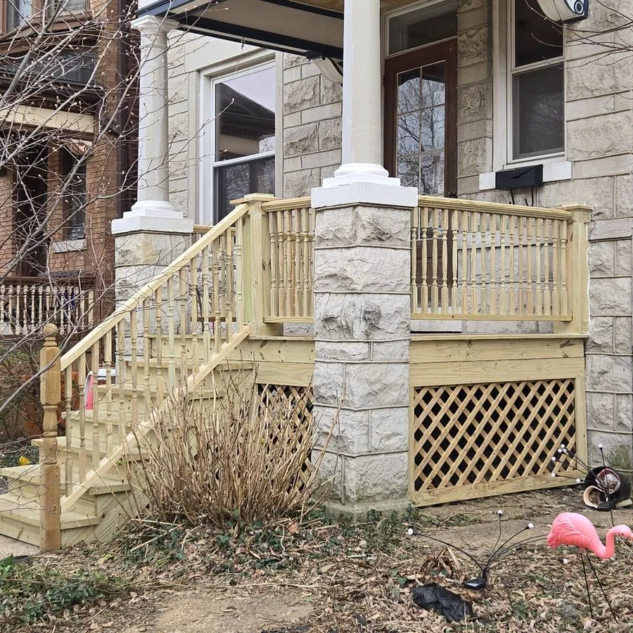
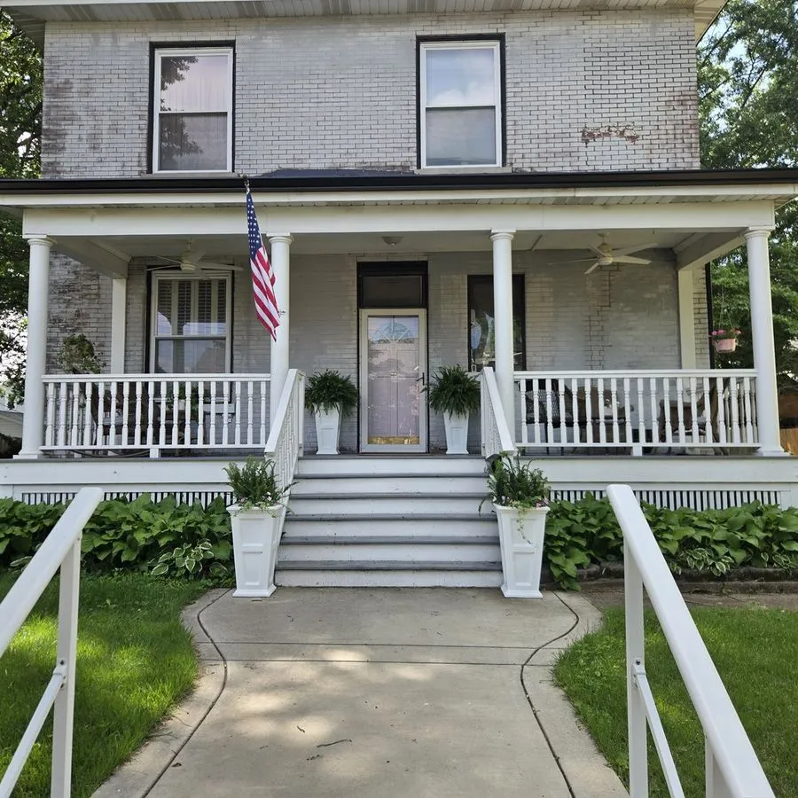

Historic porch repair and restoration in St. Louis
An old porch is the face of an old house. Repairing one means matching what was originally built, working within the rules that protect it, and fixing the structure underneath so the whole thing carries its weight again. That is the work we do, and it is a large part of why people call us about historic homes.

Historic porch restorationPorch restoration that matches the original
The fastest way to spot a bad historic porch repair is that it looks new in the wrong way. Square posts where turned columns used to be. Flat modern railings on a house built for something with a profile. Board spacing and step proportions that are close but not right. On a period home, those details are the whole character of the front elevation, and once they are gone the house reads differently from the sidewalk.
On a home in a historic district, what the porch has to be is not our call to make, and that is a good thing. The historical society sets the requirements. They review the work and tell us which details have to be preserved, what materials are acceptable, and what any replacement has to match. Our job is to take that direction and build to it exactly.
In practice that covers the column profile, railing height and pattern, spindle turning, cap and base detail, skirt and lattice, tread depth and riser proportion, and the trim that ties the porch into the house. Where an original piece can be saved and repaired, we save it. Where it has to be remade, it gets remade to match. The standard is set for us, and meeting it is the job.
When we finish, the porch is structurally new where it needed to be and visually original everywhere it counts. It should look like it has always been there, and now it will stay there.
Period-correct columns, railings, steps, and details
Historic porches fail in predictable places, and nearly all of them are repairable.
Above the deck
- Columns and posts, repaired or matched and replaced
- Railings, top and bottom rails, and turned spindles
- Porch flooring, including tongue and groove decking
- Steps, treads, risers, and stringers
- Skirting, lattice, and trim details
- Ceilings, beadboard, and soffit repair
Underneath
- Rotted or settled support posts and piers
- Failing beams and girders carrying the porch
- Joists, framing, and the connection to the house
- Foundations and footings that have shifted
- Sagging or separating porch decks
- Porch details shedding water the wrong way
Historic district permits and design review
If your home sits in a historic district, the porch is not just a construction project, it is a review process. Proposed work goes in front of the people responsible for protecting the character of the district, and the submission has to show what is there now, what is proposed, and why the proposal is appropriate to the period and the building. Materials, dimensions, profiles, and finishes all get looked at.
That process is exactly why a lot of contractors decline historic porch work. It takes documentation, it takes knowing what will be approved before you draw it, and it takes patience with a timeline you do not control. We have been through it enough times to design the work so it gets approved, prepare what the review needs, and keep the job moving. Even the city inspectors have noticed.
You get one company handling the design, the historic review submission, the permit, and the construction, all matched to the period of the house. That is a much shorter path than assembling it yourself.
Structural porch repair on older homes.
Sagging porches and settled piers
A porch dropping at one corner or pulling away from the house is usually one pier, one post base, or one beam that has given up. We shore it, replace what failed, and bring the porch back to level.
Supports that affect the whole house
On older homes the porch structure and the house structure are often tied together. Repairing supports under a porch can settle problems showing up well beyond the porch itself.
Rot at the source
Rotted columns and floors are almost always a water story. We find where the water is getting in and correct the carpentry detail that let it, so the repair holds. If the cause turns out to be site drainage rather than the porch itself, we tell you exactly what needs to happen first.

What owners of older homes say.
“Their knowledge dealing with older homes was obvious. They repaired supports under the porch that were affecting the whole house. A beautiful, safe, welcoming entry — highly suggest anyone reach out to Ryan!”
“We would recommend BAC to anyone who needs an honest contractor. Ryan made us aware of concerns with the sub-structure and had the solution at the same time. Fair and within our budget.”
Historic porch repair across the St. Louis area
We take on historic porch repair and restoration throughout St. Louis’s historic neighborhoods, including Lafayette Square, Compton Heights, Soulard, the Central West End, The Hill, and Shaw, along with the older housing stock across Kirkwood, Webster Groves, Brentwood, Clayton, and Richmond Heights, and out through Valley Park, Eureka, Pacific, and St. Charles County.
Whether your porch is under district review or simply belongs to a house old enough to deserve the right details, the visit works the same way. We walk it with you, get underneath it, and tell you what is holding, what has failed, and what it takes to restore it properly. That estimate is free. See the full service area, or read about our approach to structural repair.
Tell us about your porch. We’ll tell you straight.
Send a few details and we’ll get you a free, honest estimate for the porch repair or restoration your house actually needs, historic district requirements included.